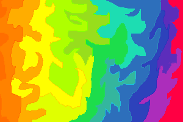

Swiping the beads of perspiration from your forehead and cringing at the stickiness, you started to walk around the room. The smaller flames licked at your presently bare feet, but you felt no burn. Rather, they acted like reassuring embraces. Again...reassuring for what? For the fact that you were alone? For hope that you actually weren't?
You found it odd that the floor was metallic. It felt smooth against your feet, and cold. Unsettingly cold. From what you could imagine, it should've been burning you, even if the flames weren't on their own. Why this stood out in a sequence where very little made sense was beyond you. But the fact was that it chilled you to your bones. It radiated from your joints and outwards, goosebumps plaguing your skin like a rash.
Wrapping your arms around yourself in hopes of succeeding where the flames were failing only fell flat. If anything, it made the goosebumps worse. The touch alone was enough to aggravate them to spread to even your fingertips. It was worse than the prune-like quality that took form when one's in water for too long. The frightening thought that followed rang too true to ignore. Would you be able to feel anything soon?
With a shaky and labored breath, your steps quickened as you plunged forward. The door and window were no longer in sight, and flames raged behind you where you had previously walked. The only way ahead now was in front of you. Going back would take too much time.
You were trying to think of the familiarity of this setting. Did it mean anything to you? A place with a metal floor and dark walls that only enhanced the brightness of the fire. They were too general of descriptions to depict a specific place, and even then, you didn't think you'd ever walked on such a floor. Just as you were coming to terms with this being an endless hall, you finally came within sight of the fourth wall. It was completely blank.
Your knees were the first to go, frozen at a slight bend that sent you down to the floor. Your hands shot out to catch you, but the bottom half of your legs shattered into countless pieces anyways. Just like glass.
That glass formed a new window underneath you. Instantaneously you were falling through it, and stuck in free fall just as a large rush of fire engulfed the entirety of the room, and followed you out of the window like a winding snake.
It twisted off into different colors and patterns around you, swirling to form bright sights that made as much sense as constellations at a first glance. They were their own art, taking forms as they pleased. It may as well have been the case they were putting on a showcase just for you. It was distraction enough to dispell your chills and disuade the fear for something you could not see.
When you woke up this time, some of these patterns still remained in-sight when you opened your eyes and decorated the darkened walls of your room. It was 4:24 now.
Continue your dream ventures Be done with the nightly endeavors.